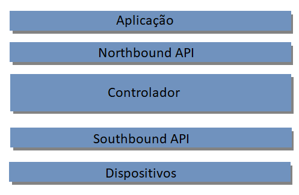
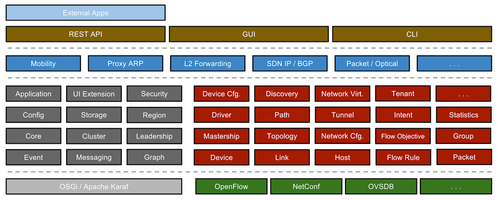

Foi desenvolvido pela equipe On.Lab, uma organização sem fins lucrativos especializada em tecnologias SDN e OpenFlow. Hoje, faz parte da Linux Foundation como projeto colaborativo. Para entender a arquitetura do ONOS, deve-se conhecer primeiramente a arquitetura utilizada pelo SDN, a qual ONOS tem como base. A arquitetura consiste na divisão do sistema nas seguintes camadas: Aplicação, Northbound API e Southbound API, Controle de fluxo e Dispositivos. A comunicação entre as camadas são feitas através do protocolo Openflow, que devido à abstração utilizada pelas APIs, não tem interferência no controle realizado pelo ONOS.
Camada de Aplicação - Usando o SDN, as aplicações podem monitorar o estado da rede e adaptar em conformidade.
Northbound/Southbound API - A Northbound é a interface entre as aplicações e os controladores, responsável pela conexão das aplicações de gerenciamento com a camada de controle. A Southbound é a interface definida entre um controlador e a infraestrutura ou seja um dispositivo SDN, responsável pela comunicação do fluxo, roteadores e switches de rede com a distribuição utilizada. As APIs facilitam a abstração da rede, permitindo com que os dispositivos interajam por meio delas, sem a necessidade de interfaces associadas ao hardware.
Controlador - Fornece abstrações dos serviços essenciais, com uma visão centralizada da rede, que permite ditar como o encaminhamento de pacotes deve lidar com o tráfego da rede. A centralização facilita o controle do gerenciamento do fluxo, já que os métodos de controle de rede tradicionais são distribuídos. É possível então, ter um gerenciamento inteligente, com controle centralizado, facilitando a organização dos sistemas.
Com o SDN também foi permitido que houvesse uma separação entre hardware e software, concentrando o controle de rede no software, independente do hardware que fosse utilizado. Dessa forma, pode-se não se prender às restrições impostas pelas empresas, pois os sistemas já estavam adaptados para se adequar aos produtos de diversas empresas. Com a interoperabilidade entre vários fornecedores, foi possível criar um ecossistema neutro em termos de fornecedor. Assim é possível que as telefonias ofereçam serviços inovadores e diferenciados, personalizados de acordo com a demanda, inclusive serviços para clientes individuais.

Camadas da arquitetura SDN
Para o ONOS, cada serviço é composto de vários subsistemas. Um serviço é formado por uma fatia vertical, composta por cada camada da arquitetura, agrupada de acordo com o serviço desejado. Um subsistema é uma coleção de componentes que, juntos, compõem um determinado serviço.
De acordo com a wiki do projeto ONOS, encontado em https://wiki.onosproject.org, os principais serviços são:
"Subsistema de dispositivos - gerencia o inventário de dispositivos de infra-estrutura.
Subsistema de Link - Gerencia o inventário de links de infraestrutura.
Subsistema de Host - Gerencia o inventário de hosts da estação final e seus locais na rede.
Subsistema de Topologia - Gerencia instantâneos ordenados por tempo de visualizações de gráficos de rede.
PathService - Computa / localiza caminhos entre dispositivos de infraestrutura ou entre hosts de estação final usando o instantâneo de gráfico de topologia mais recente.
Subsistema FlowRule - Gerencia o inventário das regras de fluxo de ação / correspondência instaladas em dispositivos de infraestrutura e fornece métricas de fluxo.
Subsistema de Pacotes - Permite que aplicativos escutem pacotes de dados recebidos de dispositivos de rede e emitam pacotes de dados para a rede através de um ou mais dispositivos de rede."
A figura a seguir ilustra os subsistemas:

Subsistemas ONOS. Imagem extraída de: https://wiki.onosproject.org.
A arquitetura modular do ONOS permite que o sistema seja facilmente personalizado. O controlador pode se expandir para acomodar um sistema de dispositivos fisicamente distribuídos, assim, podem dimensionar suas redes ao serem adicionados novos elementos, como switches, sem perturbar todo o sistema.
A API Northbound permite que os aplicativos especifiquem o que precisam do sistema, através de seu subsistema Intent Framework. Assim o aplicativo pode dizer, por exemplo, que precisa de maior largura de banda. A partir da declaração, o sistema trabalha para que a configuração fique de acordo com as especificações. Como o ONOS é arquitetado para suportar um grande influxo, de aproximadamente um milhão de solicitações por segundo, seu desempenho não é alterado para solicitações de aplicativos e baixa latência que os provedores de serviço precisam.
O Intent Framework é um subsistema que permite que os aplicativos tornem suas necessidades de rede conhecidas por meio do gerenciamento baseado em políticas. Ou seja, o aplicativo precisa de algo, e controlador faz com que isso aconteça. Isso acontece devido à forma de política e não de mecanismo com que trabalha o Intent Framework. A intent-based networking é dizer à rede o que você precisa e deixar o controlador resolver o problema, aceitando as especificações e traduzindo, por meio da intent compilation, em installable intents, que são essencialmente ações acionáveis no ambiente de rede.
Depois que o controlador recebe uma Intent, ela passa para a fase de compilação, processa o pedido, que contém estados de transição e de estacionamento, enquanto o controlador decide a melhor forma de implementar as alterações, se elas puderem ser feitas. Após a compilação, começa a fase de instalação, que terminam em um estado instalado. Se as alterações não puderem ser feitas, serão movidas para um estado de falha. Assim, a configuração da rede é automatizada, reduzindo as horas-homem necessárias para manter uma rede altamente funcional.
O ONOS interage com os dispositivos por meio da API Southbound, que se comunica com componentes de nível inferior. O núcleo seleciona os protocolos e a API utiliza-os para se comunicar com os dispositivos de rede. Como essa API é abstraída pelos provedores, ONOS não é afetado por protocolos específicos como OpenFlow, NETCONF ou interfaces de linha de comando. Os provedores oferecem meios para executar solicitações originadas do núcleo e processar e notificar o núcleo sobre eventos originados dos dispositivo, como por exemplo um pedido de conexão de switch do OpenFlow ou pacote de entrada.